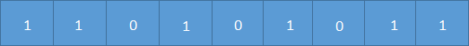
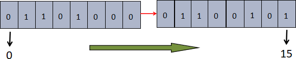

Redis bitmap位图操作（图解）
在平时开发过程中，经常会有一些 bool 类型数据需要存取。比如记录用户一年内签到的次数，签了是 1，没签是 0。如果使用 key-value 来存储，那么每个用户都要记录 365 次，当用户成百上亿时，需要的存储空间将非常巨大。为了解决这个问题，Redis 提供了位图结构。
位图（bitmap）同样属于 string 数据类型。Redis 中一个字符串类型的值最多能存储 512 MB 的内容，每个字符串由多个字节组成，每个字节又由 8 个 Bit 位组成。位图结构正是使用“位”来实现存储的，它通过将比特位设置为 0 或 1来达到数据存取的目的，这大大增加了 value 存储数量，它存储上限为
位图本质上就是一个普通的字节串，也就是 bytes 数组。您可以使用
位图适用于一些特定的应用场景，比如用户签到次数、或者登录次数等。上图是表示一位用户 10 天内来网站的签到次数，1 代表签到，0 代表未签到，这样可以很轻松地统计出用户的活跃程度。相比于直接使用字符串而言，位图中的每一条记录仅占用一个 bit 位，从而大大降低了内存空间使用率。
Redis 官方也做了一个实验，他们模拟了一个拥有 1 亿 2 千 8 百万用户的系统，然后使用 Redis 的位图来统计“日均用户数量”，最终所用时间的约为 50ms，且仅仅占用 16 MB内存。
下面设置一个名为 a 的 key，我们对这个 key 进行位图操作，使得 a 的对应的 value 变为“he”。
首先我们分别获取字符“h”和字符“e”的八位二进制码，如下所示：
把 h 和 e 的二进制码连接在一起，第一位的下标是 0，依次递增至 15，然后将数字为 1 的位置标记出来，得到 1/2/4/9/10/13/15，我们把这组数字称为位的“偏置数”，最后按照上述偏置数对字符 a 进行如下位图操作。注意，key 的初始二进制位全部为 0。
如果对应位的字节是不可以被打印的，那么 Redis 会以该字符的十六进制数来表示它，如下所示：
在线练习工具：https://try.redis.io/
查看更多命令：https://redis.io/commands
位图（bitmap）同样属于 string 数据类型。Redis 中一个字符串类型的值最多能存储 512 MB 的内容，每个字符串由多个字节组成，每个字节又由 8 个 Bit 位组成。位图结构正是使用“位”来实现存储的，它通过将比特位设置为 0 或 1来达到数据存取的目的，这大大增加了 value 存储数量，它存储上限为
2^32 。位图本质上就是一个普通的字节串，也就是 bytes 数组。您可以使用
getbit/setbit命令来处理这个位数组，位图的结构如下所示：

位图适用于一些特定的应用场景，比如用户签到次数、或者登录次数等。上图是表示一位用户 10 天内来网站的签到次数，1 代表签到，0 代表未签到，这样可以很轻松地统计出用户的活跃程度。相比于直接使用字符串而言，位图中的每一条记录仅占用一个 bit 位，从而大大降低了内存空间使用率。
Redis 官方也做了一个实验，他们模拟了一个拥有 1 亿 2 千 8 百万用户的系统，然后使用 Redis 的位图来统计“日均用户数量”，最终所用时间的约为 50ms，且仅仅占用 16 MB内存。
位图应用原理
某网站要统计一个用户一年的签到记录，若用 sring 类型存储，则需要 365 个键值对。若使用位图存储，用户签到就存 1，否则存 0。最后会生成 11010101... 这样的存储结果，其中每天的记录只占一位，一年就是 365 位，约为 46 个字节。如果只想统计用户签到的天数，那么统计 1 的个数即可。位图操作的优势，相比于字符串而言，它不仅效率高，而且还非常的节省空间。
Redis 的位数组是自动扩展的，如果设置了某个偏移位置超出了现有的内容范围，位数组就会自动扩充。下面设置一个名为 a 的 key，我们对这个 key 进行位图操作，使得 a 的对应的 value 变为“he”。
首先我们分别获取字符“h”和字符“e”的八位二进制码，如下所示：
>>> bin(ord("h"))
'0b1101000'
>>> bin(ord("e"))
'0b1100101'
接下来，只要对需值为 1 的位进行操作即可。如下图所示：

把 h 和 e 的二进制码连接在一起，第一位的下标是 0，依次递增至 15，然后将数字为 1 的位置标记出来，得到 1/2/4/9/10/13/15，我们把这组数字称为位的“偏置数”，最后按照上述偏置数对字符 a 进行如下位图操作。注意，key 的初始二进制位全部为 0。
C:\Users\Administrator>redis-cli 127.0.0.1:6379> SETBIT a 1 1 (integer) 0 127.0.0.1:6379> SETBIT a 2 1 (integer) 0 127.0.0.1:6379> SETBIT a 4 1 (integer) 0 127.0.0.1:6379> get hello "h" 127.0.0.1:6379> SETBIT a 9 1 (integer) 0 127.0.0.1:6379> SETBIT a 10 1 (integer) 0 127.0.0.1:6379> SETBIT a 13 1 (integer) 0 127.0.0.1:6379> SETBIT a 15 1 (integer) 0 127.0.0.1:6379> get hello "he"从上述示例可以得出，位图操作会自动对 key 进行扩容。
如果对应位的字节是不可以被打印的，那么 Redis 会以该字符的十六进制数来表示它，如下所示：
127.0.0.1:6379> SETBIT b 0 1 (integer) 0 127.0.0.1:6379> SETBIT b 1 1 (integer) 0 127.0.0.1:6379> get b "\xc0"
位图常用命令
1) SETBIT命令
用来设置或者清除某一位上的值，其返回值是原来位上存储的值。key 在初始状态下所有的位都为 0 ，语法格式如下：SETBIT key offset value其中 offset 表示偏移量，从 0 开始。示例如下：
127.0.0.1:6379> SET user:1 a OK #设置偏移量为0 127.0.0.1:6379> SETBIT user:1 0 1 (integer) 0 #当对应位的字符是不可打印字符，redis会以16进制形式显示 127.0.0.1:6379> GET user:1 "\xe1"
2) GETBIT命令
用来获取某一位上的值。示例如下：127.0.0.1:6379> GETBIT user:1 0 (integer) 1当偏移量 offset 比字符串的长度大，或者当 key 不存在时，返回 0。
redis> EXISTS bits (integer) 0 redis> GETBIT bits 100000 (integer) 0
3) BITCOUNT命令
统计指定位区间上，值为 1 的个数。语法格式如下：BITCOUNT key [start end]示例如下：
127.0.0.1:6379> BITCOUNT user:1 (integer) 8通过指定的 start 和 end 参数，可以让计数只在特定的字节上进行。start 和 end 参数和 GETRANGE 命令的参数类似，都可以使用负数，比如 -1 表示倒数第一个位， -2 表示倒数第二个位。
在线练习工具：https://try.redis.io/
查看更多命令：https://redis.io/commands
关注公众号「站长严长生」，在手机上阅读所有教程，随时随地都能学习。内含一款搜索神器，免费下载全网书籍和视频。

微信扫码关注公众号